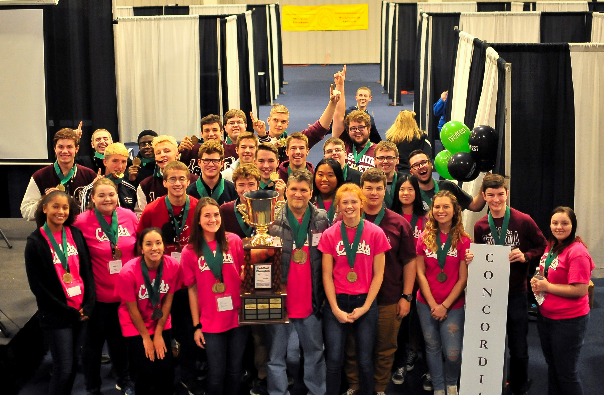

Concordia Lutheran High School has a phenomenal Computer Science program. Last year Concordia was fortunate enough to take the first place title at TechFest. Our website team is composed of 4 people: Olivia Shuller, Joshua Walz, Grace Shollenberger, and Alex Reichard. The website was developed using the Atom text editor. Olivia and Grace designed and styled the website, while Alex and Joshua did the main programming.
1 Corinthians 15:57 - "But thanks be to God! He gives us the victory through our Lord Jesus Christ."